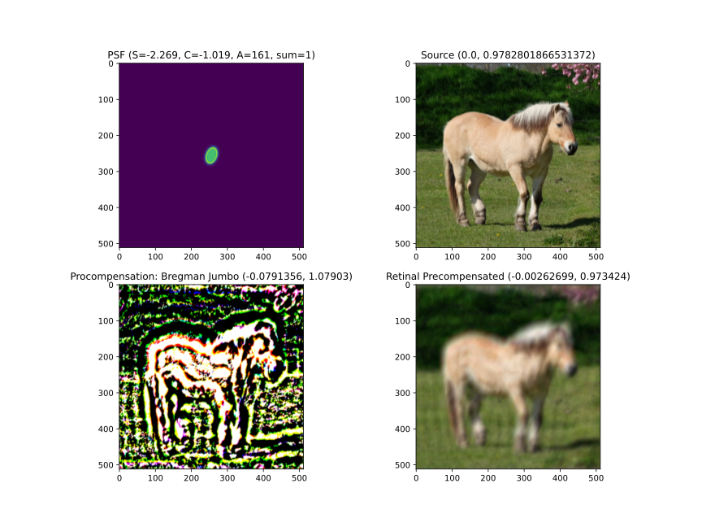
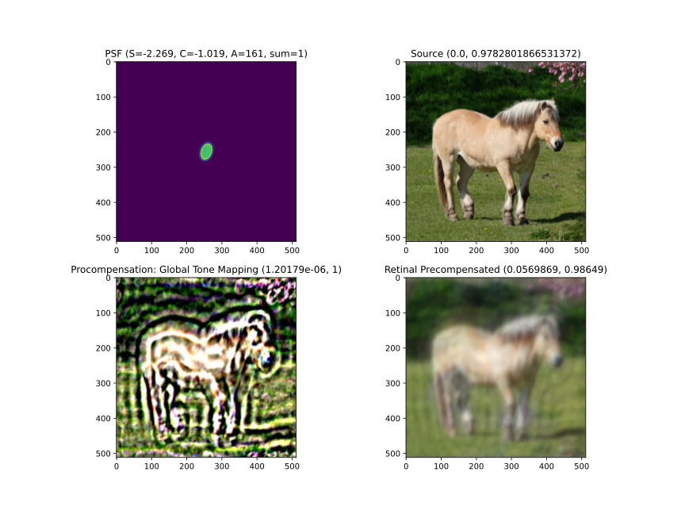
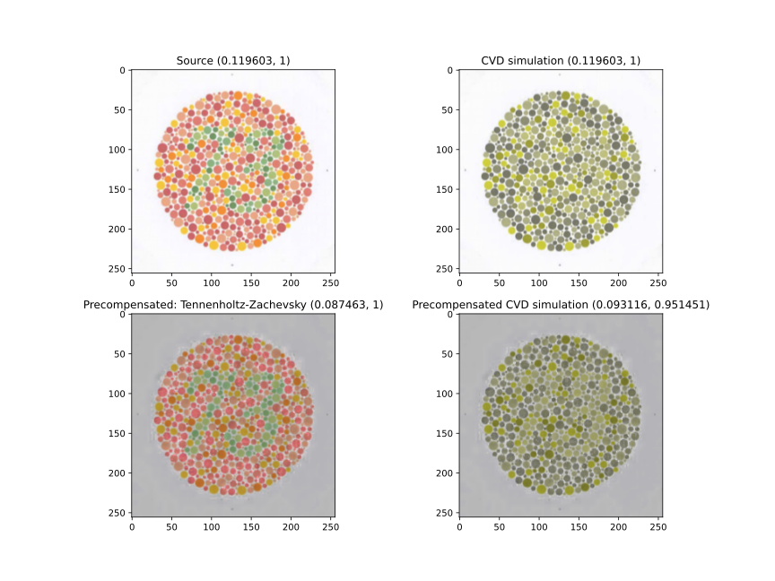

Optimization
olimp.precompensation.optimization.bregman_jumbo
- class olimp.precompensation.optimization.bregman_jumbo.BregmanJumboParameters(lr, Lambda, c_high, c_low, gap, gap_breg, gamma, beta, progress, debug)[source]
- Lambda: float
Alias for field number 1
- beta: float
Alias for field number 7
- c_high: float
Alias for field number 2
- c_low: float
Alias for field number 3
- gamma: float
Alias for field number 6
- gap: float
Alias for field number 4
- gap_breg: float
Alias for field number 5
- lr: float
Alias for field number 0
- progress: Callable[[float], None] | None
Alias for field number 8
- olimp.precompensation.optimization.bregman_jumbo.bregman_jumbo(image: Tensor, psf: Tensor, parameters: BregmanJumboParameters = (0.01, 10.0, 0.95, 0.050000000000000044, 0.0001, 0.01, 0.001, 1.0, None, None)) Tensor[source]
- 
olimp.precompensation.optimization.global_tone_mapping
- class olimp.precompensation.optimization.global_tone_mapping.GTMParameters(x1, x2, y1, y2, loss_func, optimizer_tonemapping, k, lr, iterations, gap, progress, debug, history_loss)[source]
-
- gap: float
Alias for field number 9
- history_loss: list[float] | None
Alias for field number 12
- iterations: int
Alias for field number 8
- k: float
Alias for field number 6
- loss_func: Callable[[Tensor, Tensor], Tensor] | None
Alias for field number 4
- lr: float
Alias for field number 7
- optimizer_tonemapping: type[Optimizer] | None
Alias for field number 5
- progress: Callable[[float], None] | None
Alias for field number 10
- x1: float
Alias for field number 0
- x2: float
Alias for field number 1
- y1: float
Alias for field number 2
- y2: float
Alias for field number 3
- olimp.precompensation.optimization.global_tone_mapping.precompensation_global_tone_mapping(img: Tensor, psf: Tensor, params: GTMParameters) Tensor[source]
- 
olimp.precompensation.optimization.montalto
- class olimp.precompensation.optimization.montalto.MontaltoParameters(lr, theta, tau, Lambda, c_high, c_low, gap, loss_func, progress, debug)[source]
- Lambda: float
Alias for field number 3
- c_high: float
Alias for field number 4
- c_low: float
Alias for field number 5
- gap: float
Alias for field number 6
- loss_func: Callable[[Tensor, Tensor], Tensor] | None
Alias for field number 7
- lr: float
Alias for field number 0
- progress: Callable[[float], None] | None
Alias for field number 8
- tau: float
Alias for field number 2
- theta: float
Alias for field number 1
- olimp.precompensation.optimization.montalto.montalto(image: Tensor, psf: Tensor, parameters: MontaltoParameters = (0.01, 1e-06, 2e-05, 65.0, 1.0, 0.0, 0.01, None, None, None)) Tensor[source]

olimp.precompensation.optimization.tennenholtz_zachevsky
- class olimp.precompensation.optimization.tennenholtz_zachevsky.TennenholtzZachevskyParameters(contrast_func_type, sim_window_size, progress)[source]
- contrast_func_type: Literal['lin', 'exp']
Alias for field number 0
- progress: Callable[[float], None] | None
Alias for field number 2
- sim_window_size: int
Alias for field number 1
- olimp.precompensation.optimization.tennenholtz_zachevsky.tennenholtz_zachevsky(img_3ch: Tensor, distortion: ColorBlindnessDistortion, parameters: TennenholtzZachevskyParameters = ('lin', 11, None)) Tensor[source]
Tennenholtz-Zachevsky Natural Contrast Enhancement color blindness precompensation.
